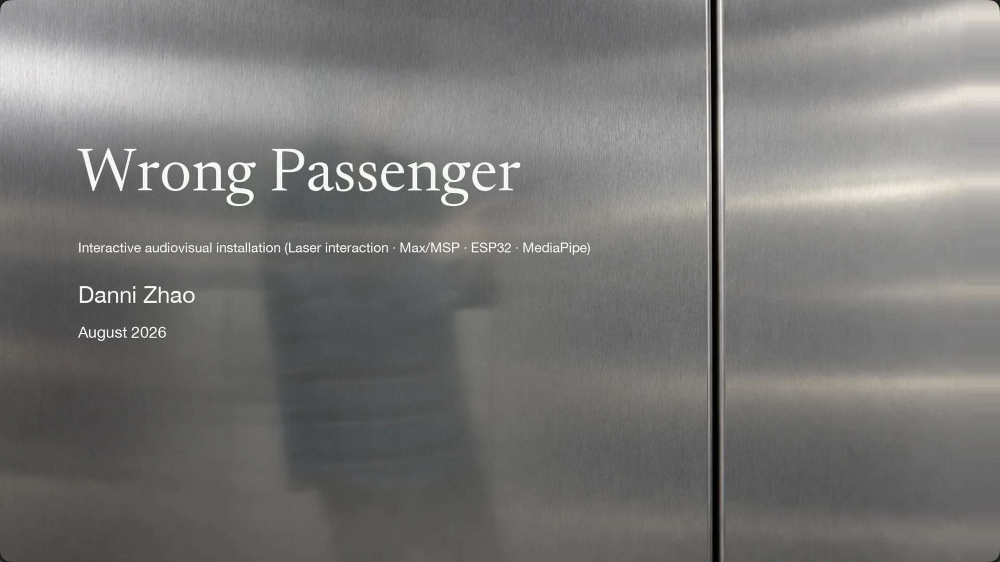
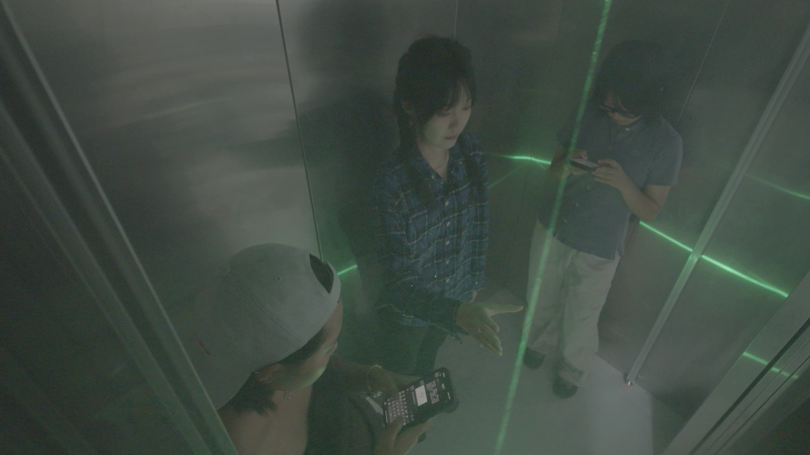

Wrong Passenger 错误乘客

When an elevator functions normally, why does my body still feel out of place? Wrong Passenger brings this mismatch into an interactive space of gesture, electronic sound and four green laser beams.
About the work
I know the elevator is safe. Yet the floor numbers and familiar chimes do not relax my body: I feel suspended and imagine the support beneath me disappearing. Other passengers can calmly enter, wait and leave. The same space holds experiences that do not agree.
Drawing on Caroline A. Jones's discussion of the bureaucratization of the senses, I extend this question into an everyday technological environment. Displays, sounds, lighting and familiar riding habits organise how a passenger is expected to perceive and behave. My unease makes these ordinary arrangements newly apparent.
Four green laser beams establish visible regions inside the elevator. A camera tracks hand position and height through MediaPipe; OSC carries these values into Max/MSP. Raising, holding and moving a hand changes sound texture, timbre and spatial behaviour. Max/MSP also sends control to an ESP32, which varies the beams' switching and brightness.
Through sound, light and movement, a body usually limited to standing and waiting can intervene in the space. I want to preserve this discomfort and give it a perceptible form, rather than resolve it into an account of overcoming fear.

Gesture, sound and light
Camera & MediaPipe
Track the position and height of the hands.
OSC & Max/MSP
Map gesture regions to sound texture, timbre and spatial change.
Sound & laser control
Electronic sound and four independently controlled laser channels reshape the space.
When everything functions normally, why does my lingering unease make me the ‘wrong’ passenger?
Spatial studies & shared space


